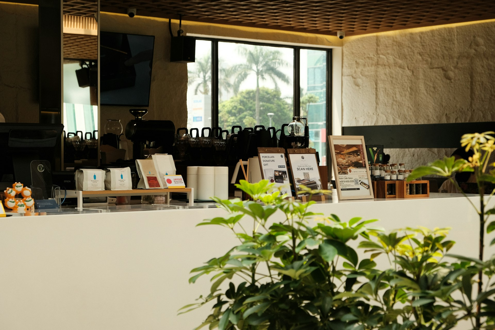

"SEGI Coffee menghadirkan suasana nyaman dengan interior minimalis dan sentuhan tanaman hijau. Tempat yang cocok untuk menikmati kopi dan melepas penat dari kesibukan sehari-hari."
Setiap ulasan membantu kami menjaga presisi seduhan, kenyamanan ruang kerja, dan keramahan pelayanan di Kota Tasikmalaya.
Tulis Pengalamanmu
"SEGI Coffee menghadirkan suasana nyaman dengan interior minimalis dan sentuhan tanaman hijau. Tempat yang cocok untuk menikmati kopi dan melepas penat dari kesibukan sehari-hari."
"Pencahayaan alaminya sangat nyaman di mata saat membuka laptop seharian. Hampir di setiap sisi meja tersedia stopkontak dan koneksi Wi-Fi stabil untuk meeting daring."
"Kopi Susu Aren Segi punya takaran espresso yang berani tapi tetap halus di tenggorokan. Manis gula arennya pas dan tidak menutupi karakter asli kopinya."
"Barista di slow bar sangat ramah menjelaskan perbedaan proses washed dan natural sebelum saya memesan."
"Uji Matcha Oat Latte dipadukan dengan Butter Croissant hangat adalah paket sarapan terbaik sebelum memulai aktivitas pagi di pusat kota."
"Jarak antar meja cukup lega sehingga obrolan tetap terasa privat. Desain interiornya bersih, hangat, dan tidak berisik."
"Penyajian cepat bahkan saat jam istirahat siang. Saya juga sering membeli biji Galunggung Washed 250gr untuk diseduh di rumah, selalu fresh roast."
Ceritakan menu yang paling berkesan atau suasana sudut favoritmu. Ulasan yang kamu kirimkan akan langsung tampil pada dinding testimoni di atas.